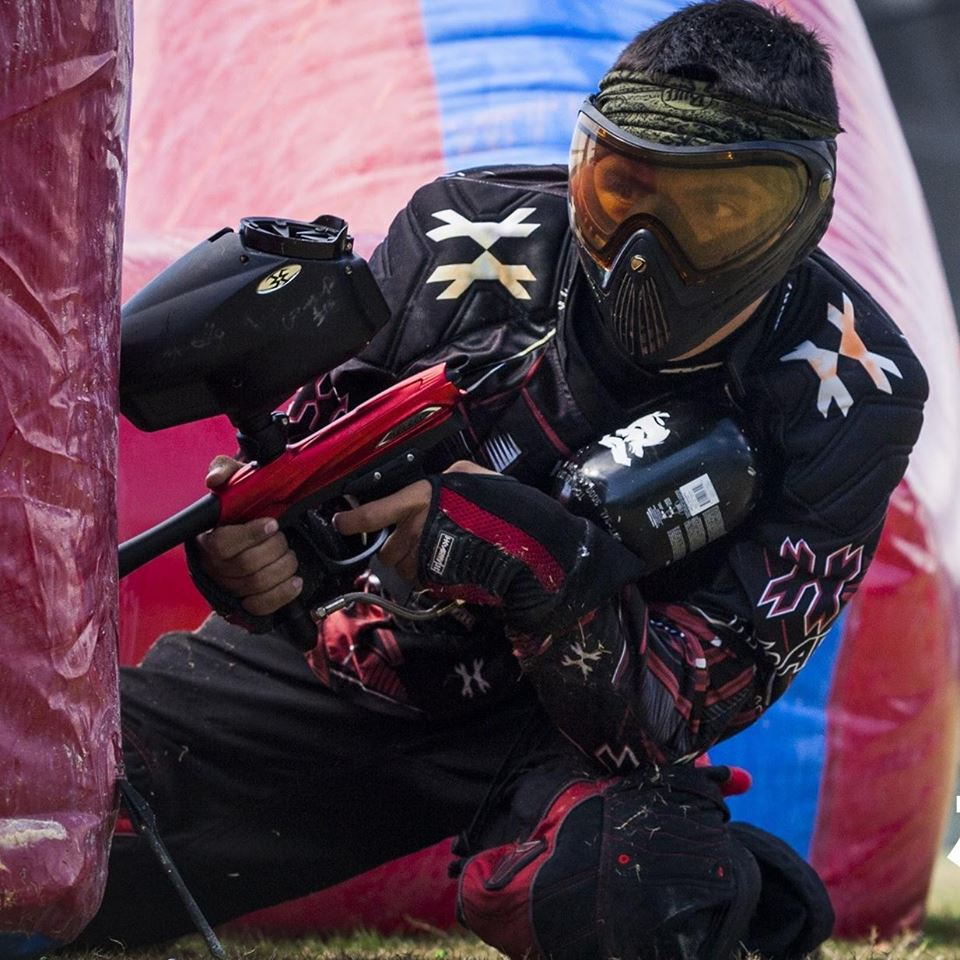

Nuestros nombres son Marcos Alejandro Pérez Ramírez, y Jacob Elías Torres, ambos estudiantes de la carrera de Ingeniería en Datos de la Universidad del Caribe.
Marcos Alejandro Pérez Ramírez, nacido el 18 de febrero de 1988 en Cancún, Quintana Roo, México. Gusta de la tecnología, el animé y los videojuegos, aunque también tiene otros intereses como las películas clásicas y el arte moderno. Actualmente se encuentra cursando el cuarto semestre de la carrera "Ingeniería en Datos e Inteligencia Organizacional", la cual disfruta demasiado, ya que estudia lo que le gusta.
Jacob Elías, nacido en 17 de Abril de 1996 en Ciudad de México. Un apasionado de la tecnología en general y de constantes retos todo el tiempo. Estudiante en la Universidad del Caribe, en la carrera de "Ingeniería en Datos e Inteligencia Organizacional", donde conocío al CTO, Marcos Alejandro, con quien más adelante fundaría "Op4". Sus pasatiempos son los videojuegos, la lectura de libros anticuados y el Paintball.
